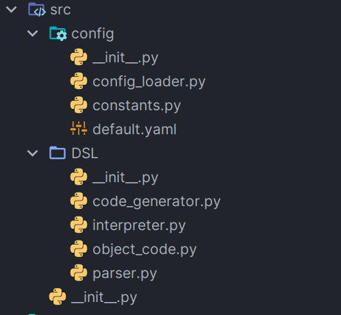
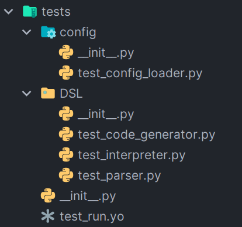

开发文档
风格： 满分15分，其中代码注释6分，命名6分，其它3分。 设计和实现： 满分30分，其中数据结构7分，模块划分7分，功能8分，文档8分。 接口： 满分15分，其中程序间接口8分，人机接口7分。 测试： 满分30分，测试桩15分，自动测试脚本15分 记法： 满分10分，文档中对此脚本语言的语法的准确描述。
设计和实现：功能：多线程 文档：sphinx
程序间接口：python模块、数据库 人机接口：简单GUI/CLI、配置文件、日志
测试：单元测试库
记法
风格
代码格式化采用PEP8标准，其余风格见下
注释
采用reStructuredText风格，这也是sphinx默认的风格。
示例如下：
@staticmethod
def update(src_dict: dict, target_dict: dict):
"""
update the src dict with target dict. Not like the builtin dict().update, this will update recursively.
:param src_dict: src dict
:param target_dict: target dict
:return: updated dict
"""
# ...
命名风格
命名应遵循以下风格：
类名使用大驼峰命名法，如：
CodeGenerator, Parser等类的公开成员方法使用下划线命名法，如：
pretty_print，parse类的私有方法使用双下划线+下划线命名法，如：
__assign, __calc_expr变量名使用下划线命名法，如：
user_input文件名，包名尽量使用下划线命名法，除非有约定俗成的大写字母缩写，如：
code_generator.py,DSL
模块组织
尽量一个模块对应一个类，如
parser.py对应Parser类，除非该模块没有类或者必要的有很多类，如object_code.py包含了生成的目标代码所应该具有的各种数据结构类。在每个包的
__init__.py中import需要暴露给外部的接口，也可显式地定义__all__ = []来确定接口
commit风格
采用前端框架Angular提出的git commit规范，如下
<type>(<scope>): <subject>
<BLANK LINE>
<body>
<BLANK LINE>
<footer>
提交类型指定为下面其中一个：
build：对构建系统或者外部依赖项进行了修改ci：对CI配置文件或脚本进行了修改docs：对文档进行了修改feat：增加新的特征fix：修复bugpref：提高性能的代码更改refactor：既不是修复bug也不是添加特征的代码重构style：不影响代码含义的修改，比如空格、格式化、缺失的分号等test：增加确实的测试或者矫正已存在的测试
设计和实现
设计上，程序类似c语言的编译流程。Parser将源代码（.ys，yard service）文件进行词法、语法分析后生成抽象语法树AST，CodeGenerator将语法树转化为目标代码(.yo，yard object code)，Interpreter解释执行目标代码。
数据结构
抽象语法树AST
采用lark库的语法树，由Tree类和Token类嵌套组成。类似：
Tree('service', [
Tree('step_block', [
Tree('step_header', [Tree('step_name', ['MyStep'])]),
Tree('step_body', [
Tree('command',
[Tree('assign',
[Tree('var', ['$var']), Tree('expression', [Tree('term', ['"value"'])])])]),
Tree('command', [Tree('speak', [Tree('expression', [Tree('term', ['"Hello, World!"'])])])]),
])
]),
])
将其以更可读的形式打印出来如下：
service
step_block
step_header
step_name MyStep
step_body
command
assign
var $var
expression
term "value"
command
speak
expression
term "Hello, World!"
目标代码
目标代码是一个Service类，将其序列化为文件即为目标代码文件。详细定义在object_code.py中。可以将其看成是C++的嵌套结构体。比如Service就是一系列Step的元组，而Step又是由步骤名和一系列指令Command组成的元组，每条指令类似三地址代码，是参数的元组，以此类推。
class Service:
def __init__(self, steps: tuple[Step]):
self.steps: tuple[Step] = steps
def __str__(self):
return str(self.steps)
def __repr__(self):
return self.__str__()
把一个实际的Service类以嵌套元组的形式打印出来结果如下：
(('MyStep', (('assign', ('$$var', ('"value"',))), ('speak', (('"Hello, World!"',),)))),),
变量表
由interpreter维护一个哈希表作为变量表
self.__variables: dict[str:str] = {
"$foo" : "123",
"$bar" : "456"
}
模块划分

程序分为两个package, DSL和config。
config包含配置文件相关模块：
config_loader.py模块用于读取用户配置文件，并和默认配置default.yaml合并constants.py面向开发人员的配置，定义了程序中的各种常量，比如：EBNF文法字符串，默认配置文件路径，日志格式等
DSL包负责DSL语言编译原理相关模块：
parser.py模块用于词法分析和语法分析，生成抽象语法树ASTcode_generator.py模块用于将AST转换为目标代码供给interpreter解释执行object_code.py模块用于定义目标代码数据结构interpreter.py模块用于读取目标代码文件，执行目标代码
main.py是程序入口文件，设置日志格式、调用以上模块完成任务
功能
除了基本的客户服务机器人功能，还提供可扩展的语法和外界交互，实现更多功能，详见用户文档。
有三个实例脚本，分别实现了客服机器人、每日一句、计算器的功能。见services目录
文档
用户文档README.md，开发文档develop.md也就是本文档，还有sphinx根据注释生成的程序接口文档。
接口
程序间接口
模块划分一节已经讲述，各个模块之间互相import, 使用各自的公开成员函数、常量。
人机接口
通过interpreter.py解释执行模块为各种指令定义的动作实现，目前是一个简单的命令行界面，实际上只要写一个子类继承Interpreter类，并重写这些方法即可实现各种交互接口。比如，如果使用图形化界面GUI，speak指令可以换成给前端发送消息显示给用户，listen指令可以换成调用语音识别接口和自然语言处理技术等。
下面是部分接口实现方法示例：
def __assign(self, command: Assign):
"""
Assign the variable. will register it.
:param command: the assign command
:return: None
"""
self.__variables[command.var] = self.__calc_expr(command.expression)
def __speak(self, command: Speak):
"""
Speak action, just print.
:param command: the Speak command
:return: None
"""
print(self.__calc_expr(command.to_say))
def __listen(self, command: Listen):
"""
Wait the given time for user input. If out of time, the input is "".
:param command: the listen command
:return: None
"""
i, o, e = select.select([sys.stdin], [], [], int(self.__calc_expr(command.time)))
if i:
user_input = sys.stdin.readline().strip()
else:
user_input = ""
self.__variables["$_last_response"] = user_input
self.__variables[command.var] = user_input
另外，也有配置文件config.yaml接口
# working dir of main interpreter.
pwd: .
# log config
log:
level: DEBUG # log level, could be DEBUG, INFO, WARNING, ERROR, CRITICAL
path: YARD.log # log path, could be relative or absolute path
# service config
service:
path: ./services/customer.ys # path of service file, "ys" means "YARD service"
variables: # variables passed to interpreter
$name: 李华
$amount: "3300"
以及使用python logging库实现的日志文件YARD.log
[2023-12-27 23:29:09,534 __main__ INFO]
==================================
__ __ _ ____ ____
\ \ / / / \ | _ \ | _ \
\ V / / _ \ | |_) | | | | |
| | / ___ \ | _ < | |_| |
|_| /_/ \_\ |_| \_\ |____/
==================================
[2023-12-27 23:29:09,534 __main__ INFO] Starting with config {'pwd': '.', 'log': {'level': 10, 'path': 'YARD.log'}, 'service': {'path': './services/customer.ys', 'variables': {'$name': '李华', '$amount': '3300'}}}
[2023-12-27 23:29:09,534 __main__ INFO] reading service file...
[2023-12-27 23:29:09,554 __main__ INFO] parsing service file...
[2023-12-27 23:29:09,556 __main__ INFO] generating object code...
[2023-12-27 23:29:09,556 __main__ INFO] running...
[2023-12-27 23:31:40,577 __main__ INFO]
==================================
__ __ _ ____ ____
\ \ / / / \ | _ \ | _ \
\ V / / _ \ | |_) | | | | |
| | / ___ \ | _ < | |_| |
|_| /_/ \_\ |_| \_\ |____/
==================================
[2023-12-28 12:30:19,300 __main__ INFO] Starting with config {'pwd': '.', 'log': {'level': 10, 'path': 'YARD.log'}, 'service': {'path': './services/calculator.ys', 'variables': {'$name': '李华', '$amount': '3300'}}}
[2023-12-28 12:30:19,300 __main__ INFO] reading service file...
[2023-12-28 12:30:19,319 __main__ INFO] parsing service file...
[2023-12-28 12:30:19,321 __main__ INFO] generating object code...
[2023-12-28 12:30:19,321 __main__ INFO] running...
[2023-12-28 12:30:23,966 src.DSL.interpreter DEBUG] running print(eval('1+1'))
测试
测试位于tests目录下，和源代码结构一致，但是加上前缀test_以供python测试模块unittest识别

测试桩
在测试的时候，某个模块还没写好，需要临时定义一个返回合法结果的测试桩。
比如在验证code_generator模块时，语法树生成还没有完成，就需要自定义一个返回语法树的测试桩。这个函数返回了语法树的列表，每一个语法树都是自定义的结构。
def parser_stub(self):
trees = [
Tree('service', [
Tree('step_block', [
Tree('step_header', [Tree('step_name', ['MyStep'])]),
Tree('step_body', [
Tree('command',
[Tree('assign',
[Tree('var', ['$var']), Tree('expression', [Tree('term', ['"value"'])])])]),
Tree('command', [Tree('speak', [Tree('expression', [Tree('term', ['"Hello, World!"'])])])]),
])
]),
]),
# ... more stub
]
在测试config_loader模块时，由于需要打开配置文件路径，这在测试中很麻烦，我们可以虚拟一个文件测试桩，其内容为给定的字符串，重载open方法让其总是返回我们指定的内容。
config_file_stub = [
"""pwd: .
log:
level: INFO
path: YARD.log
service:
path: ./services/customer.ys # path of service file, "ys" means "YARD service"
variables: { }
"""]
# 改造open，替换为模拟的open方法
with patch('builtins.open', mock_open(read_data=config_file_stub[i])):
# ...
自动测试脚本
由于使用了python unittest模块来进行测试，它会自动发现前缀为test_的单元测试并运行里面定义的测试类。
所以我们只需要简单一行
python -m unittest discover ./tests
即可自动运行所有测试。当然，已经把这个集成到IDE configuration里了。
记法
DSL语法记法
见用户文档EBNF语法一节。
配置文件记法
见用户文档配置文件一节。